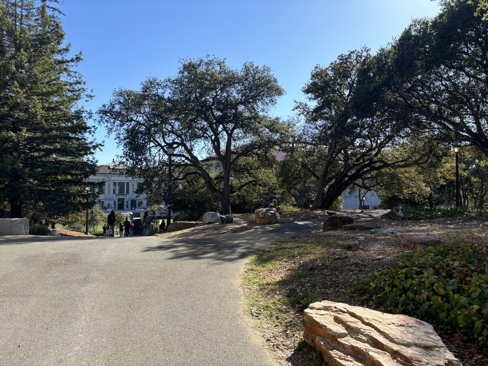

This project is split into two parts: Part A consists of manually annotating correspondences of images to mosaic them together, whereas Part B takes this one step further by automating feature matching to stitch together images automatically!
In order for this to work on a set of images, they must be taken with the same center of projection. Otherwise, the projective transformation wouldn’t work because varying perspectives make alignment inaccurate and distort the final image. To achieve this, I made sure to hold my phone steady along the camera’s axis, rotating it slightly while keeping the camera stable.
In a projective transformation, we have 8 degrees of freedom, which means we can map one plane to another uniquely by adjusting 8 parameters (a, b, c, d, e, f, g, and h in the homography matrix). There aren’t 9 degrees of freedom because the transformation is projective, so one parameter can be normalized to 1. Our goal is to transform points from one image (x1, y1) to corresponding points in another image (x2, y2).
We want to recover a projective transformation such that:
| a b c |
| d e f | * | x1 | = w * | x2 |
| g h 1 | | y1 | | y2 |
Expanding this gives us the following system of equations:
ax1 + by1 + c = (gx1 + hy1 + 1) * x2
dx1 + ey1 + f = (gx1 + hy1 + 1) * y2
Since we only need 8 degrees of freedom, we technically only need 4 points to solve for our homography matrix. However, to improve accuracy, we can select more points (7-10) and solve the overconstrained system using least squares, minimizing the total error in alignment. This approach finds the optimal homography matrix to map from one image to another. Note: I took these correspondences using a custom annotation tool.
Once we have a homography matrix between images, warping involves using the inverse of this matrix. If we were to use a forward warp, some pixels could land between grid points, causing issues with pixel alignment and creating “holes” in the final image. Inverse warping avoids this by interpolating from surrounding pixels, which I implemented using nearest-neighbor interpolation through simple rounding.
To check the accuracy of the homography, I used image rectification. By selecting clearly defined rectangular objects, such as a textbook or poster, I could map their corners and ensure they were transformed into a clean rectangle. Here are examples of these rectifications:
Although the warping worked, creating a seamless mosaic required precise image alignment. The idea was to position image 2 on a canvas, warp image 1 to it, and overlay the result. However, alignment issues arose due to shifts introduced during warping. I calculated offsets to track these shifts relative to the original image corners. Here’s an example of naive mosaicing:
Let's get rid of this seam. To blend images and reduce visible seams, I experimented with alpha blending, distance transforms, and masks. For my images, the most effective method was identifying overlapping regions and masking along the vertical seam at the midpoint. Importing my multi-resolution blending code from Project 2, I created a two-level Laplacian stack. Here is the mask used, the blending (for this one I used 3-levels) and it blended:


Here are more mosaics:


Marking correspondences by hand is time-consuming, so in Part B, we aim to automate this process by detecting and matching features between images. Automated matching can be more accurate than manual annotation, especially for complex images.
To detect corners, I used the Harris corner detector code provided, which identifies regions where intensity shifts in multiple directions. Here are the Harris corner detections for the painting image for example:
There are so many points--we need to select the best ones. ANMS prioritizes high-quality corners by suppressing weaker points near stronger corners, ensuring that detected features are well-spaced and avoid clustering. This improves efficiency and accuracy in the matching process. Following the MOPS paper, I set a threshold distance to achieve an even distribution of 100 points. Here are the points after ANMS:


I extracted feature descriptors by taking a 40x40 window around each point, subsampling it to 8x8 with Gaussian blurring to reduce sensitivity to noise. Bias/gain normalization further ensures descriptor consistency by subtracting the mean and dividing by the standard deviation. Here are the descriptors for several initial points:

To match descriptors between images, I calculated pairwise distances using the dist2 function provided, which returns squared Euclidean distances. By setting athreshold of 0.8 Below are the matching points after feature matching. Here are the features matched:
While most feature matches are accurate, some mismatches remain. Using RANSAC, I filtered outliers by iteratively fitting homographies to random subsets of points and identifying the transformation with the most inliers. I set a threshold of 5 to balance accuracy and runtime. With RANSAC-refined homographies, I then repeated the blending process used in Part A. Here’s the final results of the auto-stitching:


RANSAC may not work so well with repetitive features becasue?? I wanted to test this out, so I tried auto-stitching a brick wall, but it actually did pretty well!


This project was an exciting exploration into the possibilities of image processing. Using linear algebra, we successfully transformed, warped, and aligned images to create cohesive mosaics. In particular, image rectification in particular just is so cool to me because The autostitching portion, in particular, simplified a complex process and yielded impressive results with minimal user input.